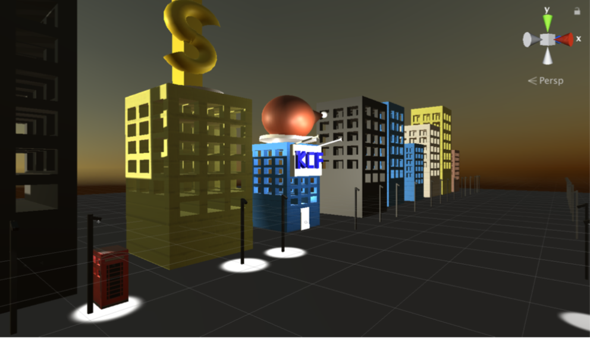

Animation
The following collections are my personal process of taking IAT 445 Immersive Environments. In this course, I learned the techniques for 3D computer animation and virtual world building techniques such as keyframing, performance animation, procedural methods and motion capture. Moreover, lighting and soundtrack generation were required in this course. Integrates hands-on fundamentals with design praxis and theoretical and research concerns. The course allowed me focusing on specific animation and behavior modeling techniques and the human body details with among of physical moving such as walking, trotting and running. In this class, we were using Unity and Maya, modeling, to build up the game world and created a real-time interaction in the space.

Process
The following collections were my personal process of taking IAT 445. I created a city and allow the user to interact with the model and set in the scene. The user can navigate and control the first person model to interact with the scene and settings. When the user was close to the telephone booth, the booth door will open and the user can walk into the telephone booth. Users can also follow the street light to explore other places and interiors.
Challenges
I found the course was a bit challenging since the program was code base and we needed to do centra in coding to have animations and interactions. It needed a lot of times to figure it out the broken code and errors.
Result
After facing those challenges, I still didn't change my goal of being an animator and I really appreciated the experience of working on Unity and what I learned from this class.
Video Editing
In IAT 344 Moving image, I worked in a group of three; we were producing a documentary short or narrative video of 3-5 minutes in a group of three. In this project, We did a lot of background research of this community health center. We also did a lot of interviews with a doctor who worked there and a client in the community health center. Every week, we visited the community and the health center to film and get a variety of shots.
Process
We filmed together and we went over ideas together. We used Adobe Premiere Pro to edit our final video and inserted ambiance sound to enrich the level of the video. With this sound design, our video had more depth and effect. After watching the first editing together, we tried to generate the sound and reduce all the sound pitch in the film. We also asked our friends or family to give us critique so that we could improve the video from the feedback.

Challenges
One of biggest challenge that we came across to in this project was planning and organizing the technical aspects such as interview, script, time, filming video and appointment with the clinic. We separated the heavy tasks to each member where they were more experienced in the field.
Result
I learned a lot on how to work as a team and how to work with a client. I also learned a lot of filming skill such as dolly, pan, and tilt, which were well used in the filming process. Lighting in the film was important because it changed the feeling and the emotions of the film. Post-production of a film allowed me to work on the special skills that camera and lighting weren't able to achieve such as sharpening the color, color contrast,and faded scene. I also really enjoyed doing sound design where the power of sound aids the storytelling process. As a team, we really enjoyed this experience and appreciated the opportunity to work with our client.
Graphic design